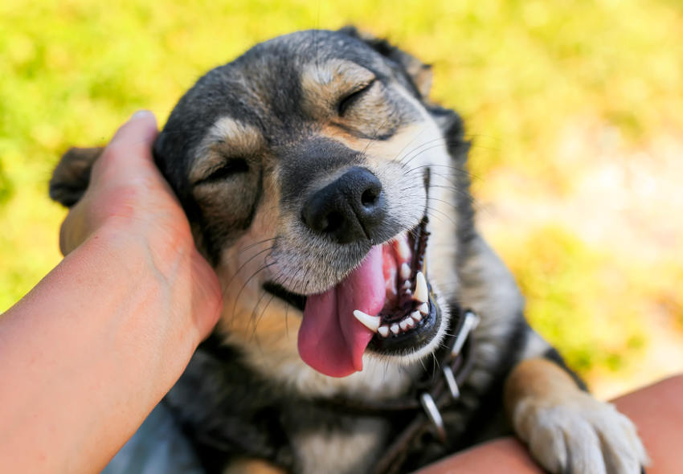
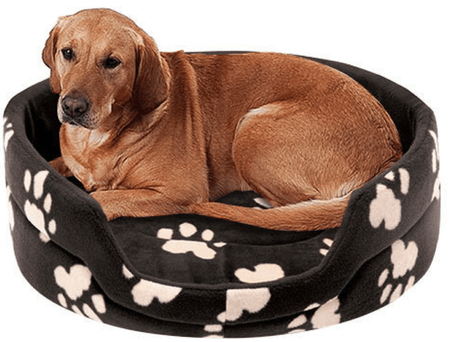
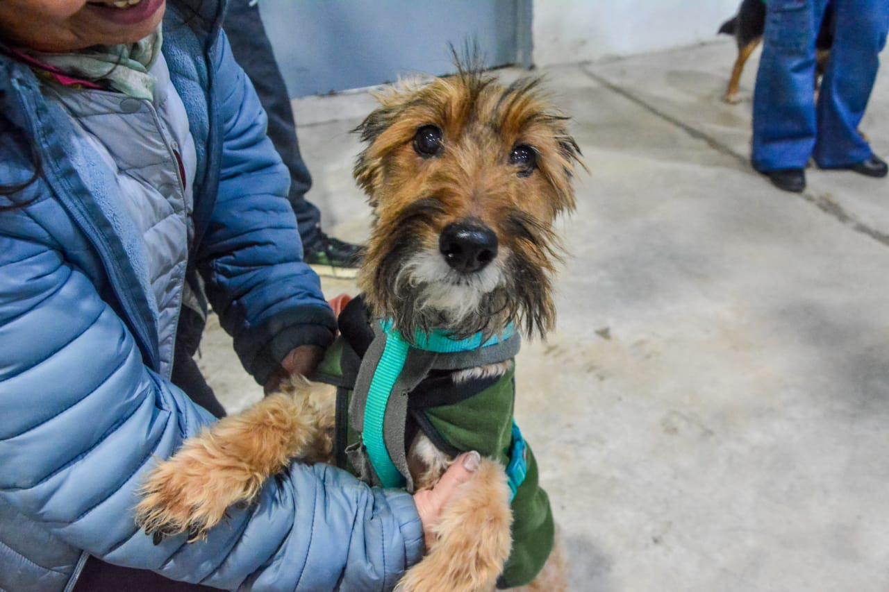

Nuestros Programas de Ayuda
Conocé las diferentes formas en las que trabajamos para mejorar la vida de los animales
Rescate y Bienestar

Nos encargamos de salvar animales de las peores condiciones, ya sea por abandono, maltrato o accidentes. Cubrimos todo tipo de asistencia veterinaria y damos asilo hasta que se les encuentre un nuevo hogar. También tenemos un programa de castración gratuita para cualquier persona ¿Tenés mascota pero no querés que tenga crías? ¡Mandanos un correo y coordinamos para un turno!
Adopción responsable

En Huellitas Solidarias, nuestra misión es proteger a los animales en situación de abandono. Para lograrlo, conectamos a los rescatados con personas que puedan brindarles un hogar de forma definitiva
Tus compromisos
Entrevista previa a la adopción. Revisión del hogar por uno de nuestros profesionales. Seguimiento de parte de la ONG para asegurar la adaptación de la mascota.
En Huellitas Solidarias entendemos que no todos pueden o están dispuestos a adoptar una mascota, si no podés adoptar, podés ser el guardián de uno de nuestros animales rescatados
Hogares de Tránsito

Tené la posibilidad de ayudarnos cuidando a un animal solo por un tiempo determinado hasta que se le encuentre un nuevo hogar
¿Por qué ser Guardián (hogar de tránsito)?
Ayudás a que el animal se recupere en un ambiente tranquilo. Ideal si querés experimentar lo que es tener una mascota por primera vez. Nuestra ONG te va a acompañar en el proceso y se hará cargo de todos los gastos.
Educación y Concientización
Difundimos por redes sociales la importancia de la vacunación y el cuidado diario de las mascotas, hemos visitado escuelas y universidades, dando charlas y panfletos informativos sobre el tema. ¿Te interesaría asistir? ¡Seguinos en redes sociales! Solemos informar sobre posibles encuentros por ese medio
0 animales rescatados con tu ayuda!